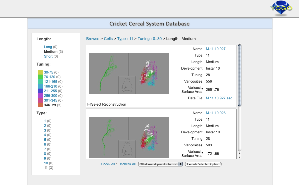

Check out our projects by visiting the links below. If the site requires a login just use the username "demo" and the password "demo".
CercalDB
The Cricket Cercal Database (CercalDB) is a set of data resulting from our PI's previous research studying the Cricket Cercal System. The yogo data model is fairly simple because the application does not try to capture or record any of the scientific methods used to gather the data, rather this application is only providing the ability to publish the data in a easy to use, web friendly way that allows the yogo team to explore various implementations of different mechanisms that allow simple publishing of data by scientists. The published data needs to provide good support for use by other software and applications, plus allow some simple user drive comparative analysis. These features have been integrated into the CercalDB in a simplistic way, providing the foundation for the team to explore more robust, rich interfaces for this functionality.
The CercalDB is still in development, however the team anticipates it will successfully meet the goals of making the primary research data available in a simple to navigate, easy to use way that provides ways for others to download and use the data.
The Yogo Toolkit is benefitting directly from this application because it focuses specifically on the publication aspect of Yogo managed data. The CercalDB has provided a good basis for exploring mechanisms for scientists to specify what subsets of their data they want to publish, how to label subsets, and how to specify what level of access users need to get the data. For example, a researcher might publish a set of example data or data specific to a publication that's freely accessible to anyone, or a set of data about a specific set of questions that's only accessible via email request. By having a managable set of data published, like the CercalDB, the yogo team can explore mechanisms to facilitate the various publication methodologies required by the users.